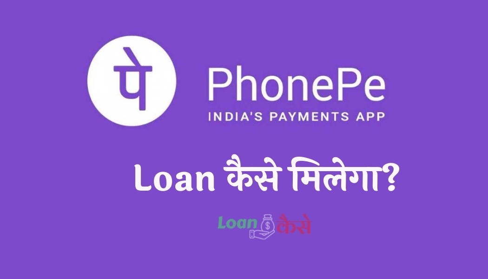

Phonepe Se Loan Kaise Milega जी हाँ दोस्तों आज हम आपको बताने जा रहे है की आप जाने माने कम्पनी Phonepe Se Loan Kaise ले सकते हैं ? वैसे तो आजकल ढेर सारे application मार्केट में आ गए हैं जो आपको घर बेध instant personal loan provide करती है , लेकिन आज मैं आपको Phonepe Se Loan Kaise Milega इसके बारे में बताने जा रहे हैं । अगर आपको भी लोन लेने में परेसानी हो रही है तो इस पोस्ट को अंत तक पढ़िए ।मैं guarentee के साथ बोल रहा हूँ ,कि आपको कोई परेसानी लोन लेने में नहीं होने वाली है ।
Phonepe Se Loan Kaise Milega ये जानने से पहले हमें ये समझना ज़रूरी है की phonepe से लोन लेना सही है या नहीं ,तो दोस्तों किसी भी application के बारे में आपको कोई बात जननी हो तो आपको सबसे पहले playstore पर उस application को सर्च करिए वह पर आपको उस application के रिलेटेड रिव्यू मिल जाएँगे इससे आपको पता चल जाएगा की वो Phonepe application कितना turstable appliation है ।
दोस्तों Phonepe Se Loan लेना बिलकुल ही आसान है तो आइए जानते है की आपको Phonepe Se Loan Kaise Milega? इसके लिए आपको क्या क्या documents देने होंगे । Phonepe लोन के बारे में सभी जानकारी भी यह आपको मिलेगी ।
{kind=link}

Phonepe company details
दोस्तों फोन पर 2015 में आया था, इसका हेड ऑफिस Ashford Park View, Bangalore, Karnataka, India
मैं स्थित है । इसके फाउंडर Sameer Nigam (Founder & CEO) Rahul Chari (Co-Founder & CTO) है।फोन पर फ्लिपकार्ट की एक चाइल्ड कंपनी है. फोन पर का मार्केट शेयर आज के समय मैं
लगभग Rs. 500,000,000 है।
How to use Phonepe app in hindi ?
दोस्तों आइए अब आपको बताते हैं कि Phonepe को यूज़ कैसे करना है? फोन पर को यूज करने से पहले आपको यह जानना जरूरी है कि आखिर फोन पर एप्लीकेशन आपके किस काम आ सकता है तो दोस्तों Phonepe एप्लीकेशन का उपयोग आप यूपीआई पेमेंट, मनी ट्रांसफर, रिचार्ज, बिल पेमेंट., मुचल फंड, गोल्ड, इंश्योरेंस यह सब चीज का ट्रांजैक्शन करने के लिए आप Phonepe का इस्तेमाल कर सकते हैं ।
Phonepe यूज करने के लिए आपको नीचे दिए गए स्टेप को फॉलो करने हैं:-
- Phonepe यूज करने के लिए आपको सबसे पहले प्ले स्टोर पर जाकर फोन पर एप्लीकेशन को इंस्टॉल कर लेना है यहां पर आप देखेंगे कि फोन पर एप्लीकेशन के लगभग 10 मिलियन डाउनलोड है तो आप इससे समझ सकते हैं कि कितने सारे लोग Phonepe एप्लीकेशन पर ट्रस्ट करते हैं .
- इसके बाद आपको फोन पर एप्लीकेशन को ओपन कर लेना ओपन करते ही आपको यह रजिस्ट्रेशन के लिए बोलेगा तो आपको अपना मोबाइल नंबर डालकर Phonepe मैं रजिस्टर हो जाना है.
- ध्यान रहे आपको अगर अपने बैंक से यूपीआई ट्रांजैक्शन करना है तो आपको उसी फोन नंबर से अपना फोन पर अकाउंट रजिस्टर करना है जो मोबाइल नंबर आपके बैंक में रजिस्टर किया हुआ है।
- इसके अगर Phonepe के सभी टीचर को यूज़ करना चाहते हैं तो आपको अपना आधार कार्ड या पैन कार्ड या कोई और फोटो युक्त पहचान पत्र देकर अपना केवाईसी वेरीफाई करवा लेना है . इससे आपके Phonepe अकाउंट के लिमिटेशन हट जाएंगे।
- रजिस्ट्रेशन और केवाईसी कंप्लीट हो जाने के बाद आपके सामने फोन पर का डैशबोर्ड ओपन हो जाएगा
- यहां पर आप मनी ट्रांसफर, UPI बैंक ट्रांसफर, रिचार्ज एंड बिल का ढेर सारा ऑप्शन देख सकते हैं. आपको जो भी सर्विस यूज करना हो उसे आप यहां पर यूज कर सकते हैं.
Phonepe instant cash loan Kaise Milega?
दोस्तों आइए अब हम अपने मेन टॉपिक पर आते हैं कि Phonepe se loan kaise milega इसके लिए आपको नीचे दिए गए सभी स्टेप को फॉलो करना है ,तभी आप समझ पाएंगे कि phonepe से लोन कैसे मिलता है.
बताओ मैं आपको एक बात यहां पर क्लियर कर दूं कि phonepe एप्लीकेशन लोन नहीं देती है, अब आप कहेंगे कि जब लोन नहीं देती है तो मैंने ऊपर क्यों लिखा है कि phonepe से लोन कैसे लेते हैं. तो दोस्तों मैं आपको बता दूं कि फोन पर जो है वह फ्लिपकार्ट की एक कंपनी है आपको फोन पर फ्लिपकार्ट के जरिए लोन प्रोवाइड करती है तो आइए जानते हैं कि आप phonepe लोन लोन फ्लिपकार्ट के जरिए कैसे ले पाएंगे.
Phonepe loan process kya hai in Hindi?
- दोस्तों जिस तरह आप phonepe फोन पर एप्लीकेशन को प्ले स्टोर से इंस्टॉल किए हैं उसी तरह फ्लिपकार्ट एप्लीकेशन को भी इंस्टॉल करके रजिस्टर कर लेना है ध्यान रहे कि आपको उसी नंबर से यहां भी रजिस्टर करना है जिस नंबर से आपने phonepe एप्लीकेशन में रजिस्टर किया है।
- इसके बाद आपको टॉप लेफ्ट कॉर्नर पर मेनू के आइकन पर क्लिक कर देना है यहां पर आपको माय अकाउंट में जाना है ।
- माय अकाउंट में जाने के बाद आपको आपका प्रोफाइल देखेगा यहां आपको नीचे स्क्रोल करना है. नीचे स्क्रॉल करने पर आप देखेंगे Flipkart Pay Later यहां आपको कुछ लिमिट दिखाई देंगे जनरली 4000 तक के लिमिट यहां पर दिखाई देंगे यानी कि मैं अभी 4000 तक का शॉपिंग फ्लिपकार्ट पर बिना पेमेंट किए कर सकता हूं लेकिन मुझे बाद में इसे Repay करना होगा.
- जब आप यहां ब्यूटी टेल पर क्लिक करेंगे तो आपको यहां अपना फुल केवाईसी कर लेना है सबसे पहले आपको अपना पैन नंबर डाल लेना है उसके बाद आधार नंबर डालकर अपना फुल केवाईसी कंप्लीट कर लेना है तभी आप फ्लिपकार्ट पे लेटर का यूज़ कर पाएंगे दोस्तों शुरू में आपको कम से कम लिमिट दिया जाता है लेकिन जब फ्लिपकार्ट का आपके ऊपर ट्रस्ट बन जाता है तब आपका लिमिट बढ़ा दिया जाता है और आप ज्यादा से ज्यादा अमाउंट का शॉपिंग कर सकते हैं.
- Flipkart paylater account एक्टिवेट हो जाने के बाद आप जो कुछ भी शॉपिंग करना चाहते हैं उसका पेमेंट ऑप्शन आप Paylater यूज़ करके अपना आर्डर कंपलीट कर सकते हैं.
- इस तरह से आप बिना किसी ब्याज दर के 45 दिन तक का लोन ले सकते हैं.
Phonepe loan repayment Kaise Karte Hain?
फोनपे का लोन रीपेमेंट करने के लिए आपको कुछ भी नहीं करना है यह ऑटोमेटिक पेमेंट हो जाता है या आप खुद से यूपीआई या डेविड कार्ड के जरिए लोन का रीपेमेंट कर सकते हैं इसके लिए आपको नीचे दिए गए स्टेप को फॉलो करना है.
- फ्लिपकार्ट एप्लीकेशन को ओपन करना है और उसके बाद माय अकाउंट में जाकर फ्लिपकार्ट पे लेटर में चले जाना है यहां पर आपको आपका लिमिट दिखाई देगा की आप अभी तक कितना शॉपिंग कर चुके हैं और कितना अमाउंट का लिमिट आपका बाकी है यहां पर आपको ड्यू अमाउंट भी दिखेगा उस पर आपको क्लिक करने के बाद आप पेमेंट ऑप्शन यूज कर सकते हैं और लोन को Repay कर सकते हैं.
- लोन repay करने के लिए आपको कोई भी ऑप्शन जैसे डेबिट कार्ड वॉलेट या यूपीआई यूज कर सकते हैं.
How to pay loan amount through Phonepe?
अब आपको हम बताते हैं कि फोन पे के मदद से आप कोई भी लोन कैसे पेमेंट कर सकते हैं. दोस्तों आप किसी भी कंपनी से लोन लिए हैं से कोई मतलब नहीं है आप सभी कंपनी के लोन फोन पर से मिनटों में पेमेंट कर सकते हैं तो आइए जानते हैं कि आप फोनपे से लोन कैसे पे करेंगे.
- इसके लिए सबसे पहले आपको फोन पे एप्लीकेशन को ओपन कर लेना है.
- उसके बाद आप रिचार्ज एंड पे बिल के ऑप्शन में देखेंगे कि लोन रीपेमेंट लिखा हुआ है उस आइकन पर आपको क्लिक कर देना है.
- उसके बाद आपको उस कंपनी को सर्च करना है जिस कंपनी से आप लोन ले रखे हैं चाहे वह बजाज फाइनेंस हो सकता है डीएमआई फाइनेंस हो सकता है एचडीबी फाइनेंस हो सकता है एलएनटी फाइनेंस हो सकता है मुथूट फाइनेंस हो सकता है टीवीएस क्रेडिट हो सकता है कोई भी कंपनी जिससे आप लोन ले रखे हैं उसको यहां पर सेलेक्ट कर लेना है.
- उसके बाद आपको लोन नंबर इंटर कर देना है.
- रोल नंबर इंटर करने के बाद कंफर्म नीचे जैसे ही आप क्लिक करेंगे आपके सामने लोन का डिटेल जैसे लोन का यह EMI कितना है लोन किस नाम से है सभी डिटेल ओपन हो जाएंगे.
- सभी डिटेल चेक कर लेने के बाद आपको नीचे पे पर क्लिक कर देना है.
- उसके बाद आपके सामने पेमेंट पेज ओपन हो जाएगा.
- यहां पर आप कोई भी पेमेंट मेथड से लोन का EMI पेमेंट कर पाएंगे.
तो दोस्तों इस तरह से आप चाहे किसी भी कंपनी का लोन ले रखे हैं फोन पर के जरिए आसानी से लोन का रीपेमेंट समय पर कर पाएंगे.
FAQ (Common Questions About Phonepe)
Phonepe Loan Interest rate kitana lagega?
दोस्तों phone pe se loan लेने के बाद आपको 45 दिन तक कोई इंटरेस्ट नहीं लगेगा और अगर आप 45 दिन तक ड्यू अमाउंट repay नहीं करते हैं तो आपको 13 से 18 परसेंट तक ब्याज देना पड़ सकता है और आपका अकाउंट भी सस्पेंड किया जा सकता है.
Phone पे customer care number kya hai?
फोनपे ऐप सपोर्ट ईमेल आईडी: बिजनेस business@phonepe.com (फोनपे ऐप सपोर्ट ईमेल आईडी)
(बिजनेस) फोनपे कस्टमर केयर शिकायत नंबर + 911246789345 (फोनपे कस्टमर केयर शिकायत नंबर)
how to check bank balance in Phonepe?
Phonepe से बैंक बैलेंस चेक करने के लिए आप नीचे दिए गए स्टेप को फॉलो कर सकते हैं, लेकिन उससे पहले मैं बता दूं कि आप उसी बैंक अकाउंट का बैलेंस चेक कर सकते हैं जिस बैंक में आप वही फोन नंबर डाले हैं जो phonepe
मैं भी डाला हुआ है. या नहीं जिस नंबर से आप phonepe अकाउंट बना रखे हैं उस नंबर से जितने भी बैंक अकाउंट लिंक है सभी बैंक के बैलेंस आप phonepe एप्लीकेशन से चेक कर सकते हैं.
इसके लिए आपको नीचे के स्टेप फॉलो करने हैं.
- सबसे पहले आपको phonepe एप्लीकेशन ओपन कर लेना है.
- उसके बाद नीचे आप माय मनी का टैब दिखेंगे. उस पर क्लिक कर देना.
- इसमें आने के बाद पेमेंट वाले ऑप्शन में बैंक अकाउंट का tab दिखेगा इस पर आपको क्लिक करना है.
- यहां आपको आपके बैंक अकाउंट्स दिखेंगे और सभी बैंक अकाउंट के नीचे चेक बैलेंस का ऑप्शन दिखेगा.
- चेक बैलेंस पर क्लिक कर देने के बाद आपको यूपीआई पिन इंटर करना है और आप उस खाते का बैलेंस देख पाएंगे.
how to use Phonepe gift card?
Phonepe का गिफ्ट कार्ड यूज करने के लिए आपको रिवॉर्ड वाले ऑप्शन पर जाना है यहां पर आप अपने गिफ्ट कार्ड देख पाएंगे और वह गिफ्ट कार्ड किस जगह यूज होगा यह भी आपको यहां दिखेगा की गिफ्ट कार्ड कैशबैक के रूप में दिया गया है या ऑफर के रूप में दिया गया है या कूपन के रूप में दिया गया जिस तरह का गिफ्ट कार्ड आपका होगा उसी तरह आप इसे यूज कर पाएंगे.
why Phonepe is not working?
कभी-कभी आपका phonepe एप्लीकेशन वर्क नहीं करता है यह प्रॉब्लम अपडेट आने के कारण या सरवर में कमी के कारण भी हो सकता है तो अगर आपका phonepe एप्लीकेशन काम नहीं कर रहा तो आप इसे अपडेट करिए और रीस्टार्ट करके यूज़ करिए. अगर फिर भी एप्लीकेशन काम नहीं कर रहा है तो phonepe कस्टमर केयर के नंबर पर संपर्क करिए.
how to add debit card in Phonepe?
- phonepe एप्लीकेशन में डेबिट कार्ड ऐड करने के लिए आपको माय मनी में जाना है .
- उसके बाद पेमेंट वाले ऑप्शन में डेबिट कार्ड पर क्लिक कर देना है.
- उसके बाद नीचे ऐड न्यू पिक क्लिक करना है.
- Add new ऊपर क्लिक करने के बाद आपको कार्ड नंबर, वैलिडिटी, और CVV डालकर ऐड कर देना है.
how to buy & sell gold in Phonepe?
Phonepe से गोल्ड खरीदने या बेचने के लिए आपको निम्नलिखित स्टेप फॉलो करने हैं.
- Phonepe एप्लीकेशन ओपन करते ही आपको सबसे ऊपर इन्वेस्टमेंट का ऑप्शन दिखेगा उसमें बाय 24k गोल्ड किताब पर क्लिक कर देना है.
- यहां पर आपको कितने ग्राम गोल्ड को खरीदना है वह दिख जाएगा
- यहां से आप बाय गोल्ड पर क्लिक करके कोई भी पेमेंट ऑप्शन यूज कर गोल्ड खरीद सकते हैं.
- Gold को बेचने के लिए आपको अपने गोल्ड लाकर में जाकर चेक करना है की आपके पास कितना Gold है वह आपको sell गोल्ड का ऑप्शन मिलेगा ।यहाँ आप जितने चाहे उतने गोल्ड लाकर में से बेच सकते हैं ।
what is utr in phonepe?
यू टी आर का पूरा नाम Unique Transaction Reference number(utr) है यह नंबर कोई भी ट्रांजैक्शन करने पर दिया जाता है.Unique Transaction Reference number सभी ट्रांजैक्शन के चाहे वह बिल पेमेंट हो रिचार्ज हो या लोन पेमेंट हो अलग-अलग होते हैं. इसका उपयोग ट्रांजैक्शन को ट्रैक करने के लिए किया जाता है कि आपका ट्रांजैक्शन सक्सेसफुल हुआ या नहीं इसका पता आप आसानी से इस नंबर के जरिए लगा सकते हैं।
how to change phonepe number in Phonepe?
Phonepe मैं मोबाइल नंबर चेंज करने के लिए आपको लेफ्ट साइड में एक प्रोफाइल पिक दिखेगा उस पर आपको क्लिक करना है क्लिक करने के बाद edit डिटेल्स पर क्लिक करना है. यहां पर आप अपने फोन नंबर नेम सभी चेंज कर सकते हैं.
how to reset Phonepe password?
- आपको सबसे पहले अपने Profile में जाना है ।
- उसके बाद आपको यह पर change password का ऑप्शन दिखेगा ।
- change Password वाले ऑप्शन पर क्लिक करके अपना password change कर सकते हैं ।
how to delete phonepe transaction history?
Phonepe transaction history डिलीट करने के लिए आपको हिस्ट्री वाले tab पर जाना है ।यह आपको सभी history दिखेंगे यह से आप transaction हिस्ट्री delete कर सकते हैं ।
How to activate and deactivated phonepe wallet?
Conclusion (निष्कर्ष):-
आज आपने क्या सिखा :- Phonepe se loan kaise milega ,phonepe से रिलेटेड कुछ questions जो अक्सर पूछे जाते हैं ।तो दोस्तों अगर आपको ये पोस्ट अछी लगी हो तो share ज़रूर करें ।और अपने बिचर नीचे कॉमेंट करें धन्यवाद ।